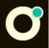

Alexandre De Luca
Développeur Backend
Spécialisé en Symfony 4
A propos de moi.
Je suis issue d'une reconversion professionnelle après avoir été Carrossier-Peintre.
Après 10 ans dans ce métier, un léger accident a été l’opportunité de se poser les bonnes
questions à savoir, poursuivre sur la même voie ou tenter une nouvelle expérience en
réalisant un métier qui m’attirait depuis longtemps.
Je suis très sociable, toujours parfaitement intégré aux équipes que j'ai rejoint, grâce à mon
esprit d'équipe et ma bonne humeur.
J'aime le travail bien fait, quand je dois faire quelque chose j'essai de le faire au mieux pour
satisfaire au maximum les attentes des clients.
Je me suis tourné vers l'école O'clock, certifiée grande école du numérique, qui proposait la formation intensive en 5 mois, pour devenir développeur web & web mobile.
3 mois pour apprendre différents langages, 1 mois de spécialisation Symfony, puis 1 mois de projet en équipe.
La formation s'est déroulée en télé présentiel 7h par jours dans une classe virtuelle. Avec
des challenges journaliers à faire en solo ou en pair-programming en dehors des cours tous
les soirs.
J'y ai appris les bases du développement web:
La conception ( Wireframe - MCD - MLD - Trello - cahier des charge ), les frameworks (
Symfony, Bootstrap, Lumen ), les basiques ( HTML 5 - CSS 3 ), la programmation
orientée objets ( PHP 7 ), la gestion de bases de données ( SQL, MySQL, PHPmyadmin )
et un peu de javascript .
Les méthodes AGILE et bonnes pratiques Opquast ont également fait partie du programme
Le projet de fin de formation
Dans le cadre du projet de fin de formation, nous avons du créer un site de A à Z utilisant tout les outils que nous avons étudié.
Notre groupe était composé de 4 étudiants et nous avions un peu plus de 3 semaines effectives à disposition.
Le projet Happy APE (https://isodev.ovh ou vidéo de présentation en dessous)
Site vitrine avec backoffice de gestion associative et événementielle
L’objectif de cette application web est de donner un moyen moderne à cette associations pour d’une part, mieux promouvoir et mieux communiquer sur ses événements à destination du public, et d’autre part faciliter l’organisation et la vie interne de l’asso, via un espace privé.
Gestion de projet :
• rédaction d'un cahier des charges (description du projet, définition des rôles de chacun, description des fonctionnalités, représentation visuelle de la base de données) ;
• users stories ;
• réalisation de wireframes ;
• répartition des tâches avec Trello.
Technologies utilisées :
• front-end : HTML, React Redux, Material UI, Javascript;
• back-end : Symfony 4, Doctrine, MySQL, phpMyAdmin, API Platform ;
Formations

O'clock
Titre Professionnel Web et Web Mobile Niveau III
O’clock - Formation en Télé-présentiel - Labellisée Grande
Ecole du Numérique
3 mois de Socle: HTML5/CSS3/PHP/Javascript
1 mois de spécialisation Symfony
1 mois de projet: https://isodev.ovh
OPQUAST
Maîtrise de la qualité en projet Web
Niveau Confirmé 730/1000